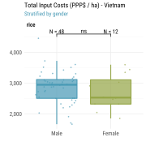
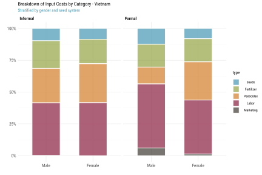
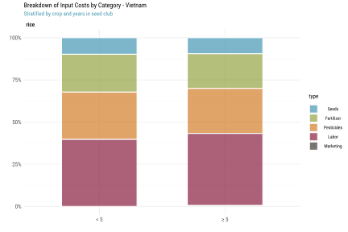
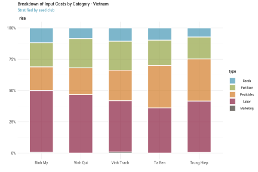
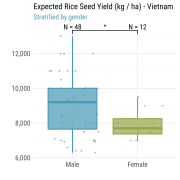
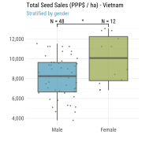
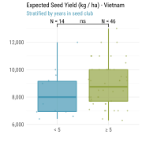
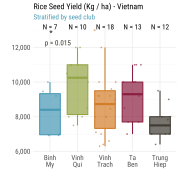
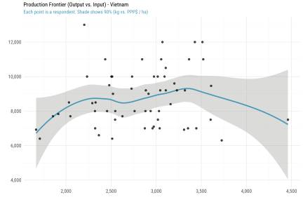
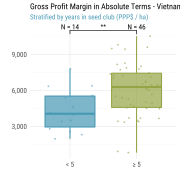

Vietnam
Field work in Vietnam consisted of a qualitative assessment with focus group discussions and quantitative surveys. We first look at the consolidated survey results.
Notes:
- 1 Int’l $ = 7,473.67 VND (Vietnamese Dong) using 2020 World Bank PPP conversion rates (1 Int’l $ = 1 USD)
- Focus crop = rice
- Transportation costs are lumped into the cost of pesticides, fertilizers and harvesting.
- Labor costs are per hectare
- Inspection and certification fees are per farm (total fees for a single season). Only farmers who sell to seed centers or seed companies do incur these marketing costs.
Survey Codebook
xrate <- 7473.67
# Load respondent data
hh <- fread("../data/vnm/hh.csv")
# Load group data
group <- fread("../data/vnm/group.csv")
# Load final codebook
lbl <- fread("../data/codebook.csv")There are 21 variables and 60 observations in this set. A detailed codebook is shown below.
kbl(lbl[label %in% names(hh)], align="llccc", caption="Survey Codebook")| code | label | type | unit | constructed |
|---|---|---|---|---|
| adm1_nm | Province | character | class | FALSE |
| group | Group | character | class | FALSE |
| code | Code | character | class | FALSE |
| age | Age | numeric | years | FALSE |
| gender | Sex | character | class | FALSE |
| member_years | How long have you been a member of this group? | numeric | years | FALSE |
| seed_ha_lcu | Cost seed per ha (LCU) | numeric | lcu/ha | FALSE |
| fert_ha_lcu | Cost of fertilizer per ha (LCU) | numeric | lcu/ha | FALSE |
| pest_ha_lcu | Cost of pesticide per ha (LCU) | numeric | lcu/ha | FALSE |
| tran_ha_lcu | Cost of transport per ha (LCU) | logical | lcu/ha | FALSE |
| labor_ha_lcu | Labor cost (LCU) | numeric | lcu/ha | FALSE |
| cert_lcu | Inspection / certification Fees (LCU) | numeric | lcu/farm/season | FALSE |
| labl_kg_lcu | Labelling costs per kg (LCU) | numeric | lcu/kg | FALSE |
| pckg_kg_lcu | Packaging costs per kg (LCU) | numeric | lcu/kg | FALSE |
| mark_kg_lcu | Other marketing costs? (LCU) | numeric | lcu/kg | FALSE |
| yield_ha_kg | Estimated Yield (kg/ha) | numeric | kg/ha | FALSE |
| sales_kg_lcu | Selling price of seed per kg (LCU) | numeric | lcu/kg | FALSE |
| sales_ha_kg | How many kg were sold in the season? | numeric | kg/ha | FALSE |
| margin_exp_ha_sh | What was your expected gross margin? | numeric | lcu/ha | FALSE |
| costs_ha_lcu | Total production cost | numeric | lcu/ha | FALSE |
| sales_ha_lcu | Gross sales | numeric | lcu/ha | FALSE |
Recode variable names.
setnames(hh, lbl$label, lbl$code, skip_absent=T)Additional recodes for categorical variables. Note that we create a categorical variable ssd to indicate whether a farmer currently engages in formal seed system distribution.
setorder(hh, adm1_nm, group, gender)
hh[, `:=`(
hhid = paste("VNM", gsub(" ", "0", format(1:.N, width=3)), sep=""),
iso3 = "VNM",
crop = "rice",
adm1_nm = factor(adm1_nm),
group = factor(group, levels=hh[, unique(group)]),
Gender = factor(gender, levels=c("Nam", "Nữ"), labels=c("Male", "Female")),
ssd = factor(cert_lcu > 0, labels=c("Informal", "Formal"))
)]Data Enrichment
Below we append some of the information that was recorded at the group level.
kbl(group, align="lccccccc")| Group | Established | Members | Soil | Seasons | Irrigation | Market access | Transboundary trade |
|---|---|---|---|---|---|---|---|
| Ta Ben | 2001 | 30 | loamy | 2.0 | good | Vicinity to local market, good road to infrastructure | No |
| Trung Hiep | 2003 | 8 | sandy-silty | 2.5 | good | Vicinity to local market, good road to infrastructure | No |
| Vinh Trach | 2004 | 15 | clay | 3.0 | good | Vicinity to local market, good road to infrastructure | Yes |
| Binh My | 2004 | 8 | clay | 3.0 | good | Vicinity to local market, good road to infrastructure | Yes |
| Vinh Qui | 2002 | 40 | clay | 3.0 | good | Vicinity to local market, good road to infrastructure | Yes |
# Merge
hh[group, on=.(group=Group), `:=`(
group_year = `Established`,
group_size = `Members`,
soil_type = `Soil`,
seasons = `Seasons`,
irrigated = `Irrigation`,
market_access = `Market access`,
ttrade = `Transboundary trade`
)]Spatial Covariates
Using community GPS coordinates we also suggest to enrich this dataset with additional biophysical and geospatial variables, e.g.:
- Agroecological zone
- Travel time to nearest market
- Distance to nearest seed center / company
- Size of nearest seed center / company
- Population density
- Last season total rainfall
- Last season heat stress days (if any)
[pending GPS coordinates]
Constructed Variables
We check farmer-reported total costs costs_ha_lcu against the sum of individual cost line items.
hh[,
tran_ha_lcu := as.numeric(tran_ha_lcu)
][,
tran_ha_lcu := fifelse(is.na(tran_ha_lcu), 0, tran_ha_lcu)
][, costs_ha_lcu_imp :=
# Per ha costs
seed_ha_lcu + fert_ha_lcu + pest_ha_lcu + tran_ha_lcu + labor_ha_lcu + cert_lcu +
# Per kg costs
yield_ha_kg * (labl_kg_lcu + pckg_kg_lcu + mark_kg_lcu)]
hh[, summary(costs_ha_lcu_imp - costs_ha_lcu)]## Min. 1st Qu. Median Mean 3rd Qu. Max.
## 0 0 0 0 0 0There is no discrepancy between the 2 quantities, so we can assume that total costs are constructed per the formula above. No error was found.
We also check that farmer-reported sales and profit margins are consistent.
hh[, summary(sales_ha_lcu - (sales_kg_lcu * sales_ha_kg))]## Min. 1st Qu. Median Mean 3rd Qu. Max.
## 0 0 0 0 0 0Further we construct gross margin per ha margin_ha_lcu, total sales sales_ha_sh and profit margin margin_ha_sh per unit of (variable) input costs, and costs_ha_ppp, sales_ha_ppp and margin_ha_ppp in PPP terms to allow for comparisons across groups and countries.
We also construct a measure of total factor productivity tfp as output per unit of input costs. Strictly speaking it is only “partial factor productivity” here because we don’t include the rental cost of land, land preparation costs, irrigation costs, and the costs of animal and mechanical implements.
hh[, `:=`(
margin_ha_lcu = sales_ha_lcu - costs_ha_lcu
)][, `:=`(
sales_ha_sh = sales_ha_lcu / costs_ha_lcu,
margin_ha_sh = margin_ha_lcu / costs_ha_lcu,
costs_ha_ppp = costs_ha_lcu / xrate,
sales_ha_ppp = sales_ha_lcu / xrate,
margin_ha_ppp = margin_ha_lcu / xrate
)][, `:=`(
tfp = yield_ha_kg / costs_ha_ppp
)]Finally we normalize all farmer cost line items into a “long” table hh_prod_cost for charting.
# Normalize production cost table
hh_prod_cost <- hh[, .(hhid,
Seeds = seed_ha_lcu,
Fertilizer = fert_ha_lcu,
Pesticides = pest_ha_lcu,
Transport = tran_ha_lcu,
Labor = labor_ha_lcu,
Certification = cert_lcu,
Labeling = yield_ha_kg * labl_kg_lcu,
Packaging = yield_ha_kg * pckg_kg_lcu,
Marketing = yield_ha_kg * mark_kg_lcu
)]
hh_prod_cost <- melt(hh_prod_cost, id.vars=1, value.name="lcu", variable.name="type")And we lump all marketing costs into a single category.
hh_prod_cost[, type_alt := factor(as.character(type), labels=c(
Seeds = "Seeds",
Fertilizer = "Fertilizer",
Pesticides = "Pesticides",
Labor = "Labor",
Certification = "Marketing",
Transport = "Marketing",
Labeling = "Marketing",
Packaging = "Marketing",
Marketing = "Marketing"
))]
hh_prod_cost <- hh_prod_cost[, .(
lcu = sum(lcu, na.rm=T)
), by=.(hhid, type=type_alt)
][, `:=`(
# Add cost shares and PPP terms
share = lcu/sum(lcu, na.rm=T),
ppp = lcu/xrate
), by=.(hhid)
][hh, on=.(hhid), `:=`(
# Add classes
group = i.group,
gender = i.gender,
age = i.age,
crop = i.crop,
ssd = i.ssd
)]Note that in the current survey we are missing farm sizes (or planted acreage), so we can not directly study the effect of farm size on the per-unit costs of production and yields, or look at potential scale effects on a farmer’s efficiency and profitability. We can however study whether larger groups might have positive effects.
Descriptive Statistics
Respondent Characteristics
First a breakdown by group.
ggplot(
hh[, .N, by=.(adm1_nm, group, ssd, gender)],
aes(axis1=adm1_nm, axis2=gender, axis3=ssd, y=N)) +
geom_alluvium(aes(fill=group), width=1/4) +
geom_stratum(width=1/4) +
geom_text(stat="stratum", aes(label=after_stat(stratum)), angle=90, size=2.2) +
scale_x_discrete(limits=c("Province", "Gender", "Seed Distribution")) +
labs(y=NULL, fill="Seed Club",
title = "Survey Respondents (Vietnam)",
subtitle = "Stratified by club and demographics (N = 60)") +
theme_def(axis.text=element_text(face="bold"))
Showing contingency table between each pair of categorical variables (seed club group, gender, and use of formal seed system distribution ssd). Rice in Vietnam is a male-dominated production, hence the absence of female respondents in a few clubs.
ttt_ftable(hh, vars=c("group", "gender", "ssd"))| group | gender | Informal | Formal | Sum |
|---|---|---|---|---|
N = 60 | Mantel-Haenszel chi-squared = 21.93 | p-value = 0.0002 | ||||
| Binh My | Nam | 10 | 1.7 | 11.7 |
| Sum | 10 | 1.7 | 11.7 | |
| Vinh Qui | Nam | 16.7 | 0 | 16.7 |
| Sum | 16.7 | 0 | 16.7 | |
| Vinh Trach | Nam | 25 | 3.3 | 28.3 |
| Nữ | 1.7 | 0 | 1.7 | |
| Sum | 26.7 | 3.3 | 30 | |
| Ta Ben | Nam | 16.7 | 0 | 16.7 |
| Nữ | 5 | 0 | 5 | |
| Sum | 21.7 | 0 | 21.7 | |
| Trung Hiep | Nam | 6.7 | 0 | 6.7 |
| Nữ | 11.7 | 1.7 | 13.3 | |
| Sum | 18.3 | 1.7 | 20 | |
| Sum | Nam | 75 | 5 | 80 |
| Nữ | 18.3 | 1.7 | 20 | |
| Sum | 93.3 | 6.7 | 100 | |
Mantel-Haenszel test shows weak association between the 3 variables. This is further shown in the 2x2 mosaic plots below (standardized residuals between [-2,2]).
mosaicplot(~gender+ssd, hh, shade=T,
main=NA, xlab="Gender", ylab="Seed System")
mosaicplot(~adm1_nm+ssd, hh, shade=T,
main=NA, xlab="Province", ylab="Seed System")
NB. blue means there are more observations in the cell than would be expected under the null model (independence). Red means there are fewer observations than would have been expected.
Seed Production Costs
General breakdown and distribution of input costs across seed clubs, gender, and input type.
ttt(costs_ha_ppp ~ group | gender, data=hh, render=fmt,
caption="Total Input Costs in Absolute Terms (PPP$ / ha) - Vietnam")| group | Statistic | Nam | Nữ |
|---|---|---|---|
| Binh My | Mean | 2,913 | NA |
| Med | 3,106 | NA | |
| SD | 642 | NA | |
| Vinh Qui | Mean | 3,011 | NA |
| Med | 2,950 | NA | |
| SD | 621 | NA | |
| Vinh Trach | Mean | 2,882 | 2,520 |
| Med | 2,938 | 2,520 | |
| SD | 442 | NA | |
| Ta Ben | Mean | 2,817 | 2,076 |
| Med | 2,806 | 2,048 | |
| SD | 447 | 235 | |
| Trung Hiep | Mean | 2,401 | 2,961 |
| Med | 2,437 | 2,973 | |
| SD | 685 | 481 |
ggplot(hh, aes(gender, costs_ha_ppp, fill=gender)) +
geom_boxplot(alpha=.7) +
scale_y_continuous(labels=comma) +
facet_wrap(~crop) +
labs(x="", y="", fill="",
title="Total Input Costs (PPP$ / ha) - Vietnam",
subtitle="Stratified by gender") +
theme_def(legend.position="none")
ggplot(hh, aes(group, costs_ha_ppp, fill=group)) +
geom_boxplot(alpha=.7) +
scale_y_continuous(labels=comma) +
facet_wrap(~crop) +
labs(x="", y="", fill="",
title="Total Input Costs (PPP$ / ha) - Vietnam",
subtitle="Stratified by seed club") +
theme_def(legend.position="none")
Breakdown across categories of farm input.
ttt(ppp ~ type | gender, data=hh_prod_cost, render=fmt,
caption="Input Costs in Absolute Terms by Gender (PPP$ / ha) - Vietnam")| type | Statistic | Nam | Nữ |
|---|---|---|---|
| Seeds | Mean | 10 | 3 |
| Med | 0 | 0 | |
| SD | 45 | 12 | |
| Fertilizer | Mean | 613 | 517 |
| Med | 592 | 496 | |
| SD | 179 | 161 | |
| Pesticides | Mean | 0 | 0 |
| Med | 0 | 0 | |
| SD | 0 | 0 | |
| Labor | Mean | 1,203 | 1,128 |
| Med | 1,136 | 1,167 | |
| SD | 391 | 205 | |
| Marketing | Mean | 1,033 | 1,055 |
| Med | 978 | 942 | |
| SD | 382 | 393 |
ttt(ppp ~ type | ssd, data=hh_prod_cost, render=fmt,
caption="Input Costs in Absolute Terms by Seed System Type (PPP$ / ha) - Vietnam")| type | Statistic | Informal | Formal |
|---|---|---|---|
| Seeds | Mean | 0 | 136 |
| Med | 0 | 141 | |
| SD | 0 | 98 | |
| Fertilizer | Mean | 597 | 551 |
| Med | 563 | 507 | |
| SD | 179 | 196 | |
| Pesticides | Mean | 0 | 0 |
| Med | 0 | 0 | |
| SD | 0 | 0 | |
| Labor | Mean | 1,167 | 1,480 |
| Med | 1,123 | 1,452 | |
| SD | 359 | 277 | |
| Marketing | Mean | 1,048 | 892 |
| Med | 971 | 961 | |
| SD | 386 | 294 |
tbl <- hh_prod_cost[, .(
ppp = mean(ppp, na.rm=T)
), keyby=.(gender, ssd, type)]
ggplot(tbl, aes(gender, ppp, fill=type)) +
geom_bar(stat="identity", position="fill", alpha=.7, width=.6, color="white") +
scale_y_continuous(labels=percent) +
scale_fill_manual("", values=colorRampPalette(pal)(5)) +
facet_wrap(~ssd) +
labs(y="", x="",
title="Breakdown of Input Costs by Category - Vietnam",
subtitle="Stratified by gender and seed system") +
theme_def()
tbl <- hh_prod_cost[, .(
ppp = mean(ppp, na.rm=T)
), keyby=.(group, type)]
ggplot(tbl, aes(group, ppp, fill=type)) +
geom_bar(stat="identity", position="fill", alpha=.7, width=.6, color="white") +
scale_y_continuous(labels=percent) +
scale_fill_manual("", values=colorRampPalette(pal)(5)) +
labs(y="", x="",
title="Breakdown of Input Costs by Category - Vietnam",
subtitle="Stratified by seed club") +
theme_def()
Are there significant differences across groups? We first compare input cost shares across gender, then across seed clubs.
ggplot(hh_prod_cost[!type %in% c("Pesticides", "Seeds")],
aes(type, share, fill=gender)) +
geom_boxplot(alpha=.7) +
scale_y_continuous(labels=percent) +
coord_flip() +
facet_wrap(~crop) +
labs(x="", y="", fill="",
title="Input Costs by Category (Percent of Total Costs by Ha) - Vietnam",
subtitle="Stratified by gender") +
theme_def(legend.position="top")
ggplot(hh_prod_cost[!type %in% c("Pesticides", "Seeds")],
aes(type, share, fill=group)) +
geom_boxplot(alpha=.7) +
scale_y_continuous(labels=percent) +
coord_flip() +
facet_wrap(~crop) +
labs(x="", y="", fill="",
title="Input Costs by Category (PPP$ by Hectare) - Vietnam",
subtitle="Stratified by seed club") +
theme_def(legend.position="top")Efficiency
Differences in productivity measures across groups?
ttt(yield_ha_kg ~ group | gender, data=hh, render=fmt,
caption="Expected Rice Seed Yield (kg / ha) - Vietnam")| group | Statistic | Nam | Nữ |
|---|---|---|---|
| Binh My | Mean | 8,272 | NA |
| Med | 8,400 | NA | |
| SD | 1,325 | NA | |
| Vinh Qui | Mean | 9,850 | NA |
| Med | 10,250 | NA | |
| SD | 1,717 | NA | |
| Vinh Trach | Mean | 8,709 | 9,000 |
| Med | 8,460 | 9,000 | |
| SD | 1,883 | NA | |
| Ta Ben | Mean | 9,770 | 7,467 |
| Med | 10,000 | 7,700 | |
| SD | 1,113 | 404 | |
| Trung Hiep | Mean | 7,182 | 7,938 |
| Med | 7,250 | 7,750 | |
| SD | 623 | 904 |
ggplot(hh, aes(gender, yield_ha_kg, fill=gender)) +
geom_boxplot(alpha=.7) +
scale_y_continuous(labels=comma) +
labs(x="", y="", fill="",
title="Expected Rice Seed Yield (kg / ha) - Vietnam",
subtitle="Stratified by gender") +
theme_def(legend.position="none")
ggplot(hh, aes(gender, sales_ha_ppp, fill=gender)) +
geom_boxplot(alpha=.7) +
scale_y_continuous(labels=comma) +
labs(x="", y="", fill="",
title="Total Seed Sales (PPP$ / ha) - Vietnam",
subtitle="Stratified by gender") +
theme_def(legend.position="none")

ggplot(hh, aes(group, yield_ha_kg, fill=group)) +
geom_boxplot(alpha=.7) +
scale_x_discrete(labels=label_wrap(5)) +
scale_y_continuous(labels=comma) +
labs(x="", y="", fill="",
title="Rice Seed Yield (Kg / ha) - Vietnam",
subtitle="Stratified by seed club") +
theme_def(legend.position="none")
ggplot(hh, aes(group, sales_ha_ppp, fill=group)) +
geom_boxplot(alpha=.7) +
scale_x_discrete(labels=label_wrap(5)) +
scale_y_continuous(labels=comma) +
labs(x="", y="", fill="",
title="Total Seed Sales (PPP$ / ha) - Vietnam",
subtitle="Stratified by seed club") +
theme_def(legend.position="none")
Looking at production frontiers (units of output vs. units of input). We expect S-shape curves with farmers at different levels of technical efficiency along the curve.
NB. Farmer VNM013 in Winh Qui has total costs over PPP$ 4,000/ha. He was excluded from the approximation (in red below).
outlier <- "VNM013"
ggplot(hh[!hhid %in% outlier], aes(costs_ha_ppp, yield_ha_kg)) +
geom_smooth(size=.8) +
geom_point(alpha=.7, shape=20, color=1) +
geom_point(data=hh[hhid %in% outlier], aes(costs_ha_ppp, yield_ha_kg),
alpha=.7, color=2, shape=18) +
scale_x_continuous(labels=comma) +
scale_y_continuous(labels=comma) +
coord_cartesian(ylim=c(4000, 14000)) +
labs(x="", y="",
title="Production Frontier (Output vs. Input) - Vietnam",
subtitle="Each point is a respondent (kg vs. PPP$ / ha)") +
theme_def(legend.position="none")
ggplot(hh[!hhid %in% outlier], aes(costs_ha_ppp, yield_ha_kg)) +
geom_smooth(aes(color=gender, fill=gender), size=.8, level=.9) +
geom_point(alpha=.7, shape=20) +
scale_x_continuous(labels=comma) +
scale_y_continuous(labels=comma) +
facet_wrap(~gender, scales="free_x") +
coord_cartesian(ylim=c(4000, 14000)) +
labs(x="", y="",
title="Production Frontier (Output vs. Input) - Vietnam",
subtitle="Each point is a respondent. Shade shows 90% CI (kg vs. PPP$ / ha)") +
theme_def(legend.position="none")
ggplot(hh[!hhid %in% outlier], aes(costs_ha_ppp, yield_ha_kg)) +
geom_smooth(aes(color=group, fill=group), size=.8, level=.9) +
geom_point(alpha=.7, shape=20) +
scale_x_continuous(labels=comma) +
scale_y_continuous(labels=comma) +
facet_wrap(~group) +
coord_cartesian(ylim=c(4000, 14000)) +
labs(x="", y="",
title="Production Frontier (Output vs. Input) - Vietnam",
subtitle="Each point is a respondent. Shade shows 90% CI (kg vs. PPP$ / ha)") +
theme_def(legend.position="none")
Profitability
ttt(margin_ha_ppp ~ group | gender, data=hh, render=fmt,
caption="Mean Gross Profit Margin in Absolute Terms (PPP$ / ha) - Vietnam")| group | Statistic | Nam | Nữ |
|---|---|---|---|
| Binh My | Mean | 3,839 | NA |
| Med | 3,518 | NA | |
| SD | 1,374 | NA | |
| Vinh Qui | Mean | 5,759 | NA |
| Med | 6,333 | NA | |
| SD | 1,932 | NA | |
| Vinh Trach | Mean | 4,334 | 6,391 |
| Med | 4,555 | 6,391 | |
| SD | 1,949 | NA | |
| Ta Ben | Mean | 6,627 | 5,003 |
| Med | 6,600 | 4,828 | |
| SD | 925 | 596 | |
| Trung Hiep | Mean | 7,084 | 8,235 |
| Med | 7,648 | 8,665 | |
| SD | 2,657 | 1,947 |
ttt(margin_ha_sh ~ group | gender, data=hh, render=fmt_pct,
caption="Mean Gross Profit Margin in Relative Terms (% of total input costs) - Vietnam")| group | Statistic | Nam | Nữ |
|---|---|---|---|
| Binh My | Mean | 142% | NA |
| Med | 118% | NA | |
| SD | 68% | NA | |
| Vinh Qui | Mean | 196% | NA |
| Med | 206% | NA | |
| SD | 63% | NA | |
| Vinh Trach | Mean | 154% | 254% |
| Med | 155% | 254% | |
| SD | 72% | NA | |
| Ta Ben | Mean | 240% | 245% |
| Med | 222% | 236% | |
| SD | 48% | 56% | |
| Trung Hiep | Mean | 304% | 285% |
| Med | 256% | 249% | |
| SD | 136% | 91% |
ggplot(hh, aes(x=1:nrow(hh), color=group)) +
geom_linerange(aes(ymin=costs_ha_ppp, ymax=sales_ha_ppp), size=.6) +
geom_point(aes(y=costs_ha_ppp), shape=20, size=1.4) +
geom_point(aes(y=sales_ha_ppp, shape=margin_ha_ppp>0, fill=group), size=1.4) +
scale_y_continuous(labels=comma) +
scale_shape_manual(values=c(25, 24)) +
guides(shape=F, fill=F) +
labs(x=NULL, y=NULL, color="", linetype="",
title="Profit Margin (PPP$ / ha) - Vietnam",
subtitle="Each bar is a respondent's gross profit margin") +
theme_def(legend.position="right")Farmers’ gross profit margins by gender and across groups in both absolute terms and in relative terms as percentage of total input costs per hectare.
ggplot(hh, aes(gender, margin_ha_ppp, fill=gender)) +
geom_boxplot(alpha=.7) +
scale_y_continuous(labels=comma) +
labs(x="", y="", fill="",
title="Gross Profit Margin in Absolute Terms - Vietnam",
subtitle="Stratified by gender (PPP$ / ha)") +
theme_def(legend.position="none")
ggplot(hh, aes(gender, margin_ha_sh, fill=gender)) +
geom_boxplot(alpha=.7) +
scale_y_continuous(labels=percent) +
labs(x="", y="", fill="",
title="Gross Profit Margin in Relative Terms - Vietnam",
subtitle="Stratified by gender (% of total costs)") +
theme_def(legend.position="none")

ggplot(hh, aes(group, margin_ha_ppp, fill=group)) +
geom_boxplot(alpha=.7) +
scale_x_discrete(labels=label_wrap(5)) +
scale_y_continuous(labels=comma) +
labs(x="", y="", fill="",
title="Gross Profit Margin in Absolute Terms - Vietnam",
subtitle="Stratified by seed club (PPP$ / ha)") +
theme_def(legend.position="none")
ggplot(hh, aes(group, margin_ha_sh, fill=group)) +
geom_boxplot(alpha=.7) +
scale_x_discrete(labels=label_wrap(5)) +
scale_y_continuous(labels=percent) +
labs(x="", y="", fill="",
title="Gross Profit Margin in Relative Terms - Vietnam",
subtitle="Stratified by seed club (% of total costs)") +
theme_def(legend.position="none")
Correlation
Significant associations.
ggpairs(
hh[, .(`seed club`=group, age, `costs PPP$`=costs_ha_ppp,
`seed yield kg/ha`=yield_ha_kg,
`margin PPP$`=margin_ha_ppp, `margin %`=margin_ha_sh)],
upper = list(
continuous="cor",
combo=wrap("summarise_by", color=pal, size=2)),
lower = list(
continuous=wrap("smooth", shape=NA),
combo=wrap("box_no_facet", fill=pal, alpha=.8)),
diag = list(
continuous=wrap("densityDiag", fill=NA),
discrete=wrap("barDiag", fill=pal, alpha=.8)),
title="Correlogram stratified by seed club - Vietnam"
) +
theme_def(
strip.text=element_text(hjust=.5),
axis.text.x=element_text(angle=-45),
panel.grid.major=element_blank()
)ggpairs(
hh[, .(gender, age, `costs PPP$`=costs_ha_ppp, `seed yield kg/ha`=yield_ha_kg,
`margin PPP$`=margin_ha_ppp, `margin %`=margin_ha_sh)],
upper = list(
continuous="cor",
combo=wrap("summarise_by", color=pal[1:2], size=2)),
lower = list(
continuous=wrap("smooth", shape=NA, color=hh[, pal[gender]]),
combo=wrap("box_no_facet", fill=pal[1:2], alpha=.8)),
diag = list(
continuous=wrap("densityDiag", fill=NA),
discrete=wrap("barDiag", fill=pal[1:2], alpha=.8)),
title="Correlogram stratified by gender - Vietnam"
) +
theme_def(
strip.text=element_text(hjust=.5),
panel.grid.major=element_blank()
)
Clustering
[TBD]
rm(tmp, x, y, i)
saveRDS(hh, "../tmp/data_vnm.rds")